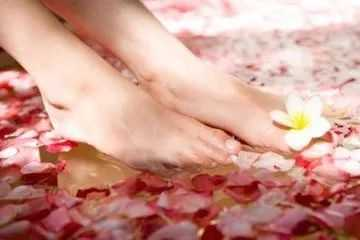
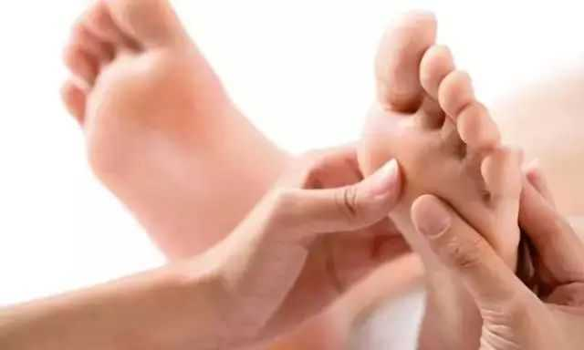
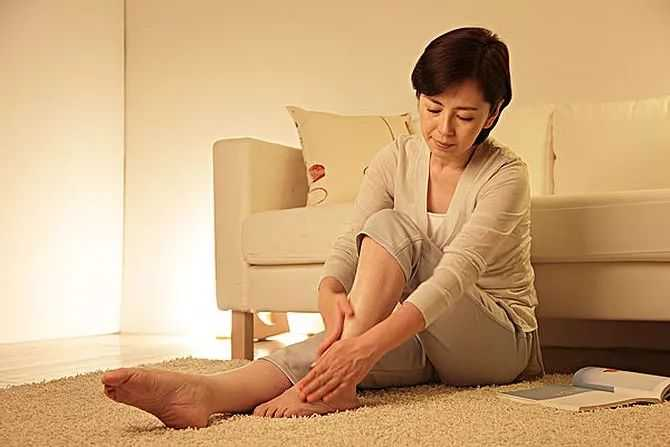

现在养生保健越来越受到人们的关注，而养生保健不仅仅是停留在保健品上，还有很多方法可帮我们有效的保健身体。比如足疗推拿就是其中之一。
足疗功效好，但是足疗是有讲究，那么足疗推拿怎么做才更科学，其中有哪些误区呢?

误区一：足疗人人适合

足部按摩治疗是一种非药物疗法，是通过对足部各个反射区的刺激，使得体内的生理机能得到调整，起到提高自身免疫功能，防病、治疗的保健作用。但是，并不是所有人都适合足疗推拿。
女性在月经期间，最好不要按摩，有出血倾向的人，在进行足底按摩时，可能导致局部组织内出血。在按摩时应避开骨骼突起处及皮下组织较少的反射区，以免挤伤骨膜，造成不必要的损伤。
另外，患高血压、心脏病，以及孕妇等人群最好不要进行足疗推拿，以防发生意外，尤其是孕妇，如果按摩不当，可能会导致流产。
此外还要注意，在饭后1小时内，最好不要做足疗。按摩后半小时，应饮用300~500毫升温开水。按摩时，不要让腿部直接受风，按摩后，也不要马上用冷水洗脚。
误区二：力道越大越好

很多人觉得，足疗推拿越重越好，常常在足疗推拿的时候，让按摩师傅按重一点，殊不知，按摩过重，会得不偿失。
适度的足底推拿可以延年益寿，对身体健康有益，但凡事要适度，过犹不及。足疗主要分为两部分，首先是泡脚，即足浴，然后才是足底按摩。足底按摩在足疗过程中所占的时间是最多的，也是最有效的。
其中，力度的大小是取得疗效的重要因素，力度过小则无效果，反之则无法忍受。对于足底按摩力度的拿捏，还是以舒服为好。身体健康的人，忍痛力比较强，很虚弱的人忍痛力就很弱。所以，像忍痛力弱的人，应该照身体能承受的范围适度、均匀用力。
所谓适度，是指以被按摩处有酸痛感，即“得气”为原则。而所谓均匀，是指按摩力量要渐渐渗入，缓缓抬起，并有一定的节奏，不可忽快忽慢，时轻时重。
误区三：自己也能做

为了方便卫生，许多人会选择在家做足疗，或者用足浴盆按摩。但是，足疗推拿不是一般地抚摸，只有对相应反射区用一定力度按摩才能达到效果，专业人士才能找准穴位，所以还是不建议在家进行足疗推拿。
若想在家足疗养生，不如简单买个木桶，睡前泡泡脚。可以选择面积大、高且深的木桶，这样泡脚的时候能使小腿完全浸泡在水中，较为舒适。如果每天坚持泡脚可以改善血液循环和新陈代谢，还能消除疲劳、改善睡眠，此外，还有养生美容、养脑护脑、活血通络等一系列保健作用。
如果有条件的话，可以在阳台的地上铺一些鹅卵石，经常光脚在上面走走，也可以起到类似足疗的作用。
需要注意的是，有不少人喜欢使用足浴盆进行足疗，但是这些足浴盆通常水流的速度不足，刺激的面积较大，往往不能取得很好的效果，还有就是足浴盆的用料比较复杂，若添加药材很有可能会发生化学反应，影响健康。


推动健康产业发展 助力全民健康生活
加入我们，打造 [ 千城万店 · 健康万民 ]
Promote the development of the health industry
上海运营总部：上海青浦区汇龙路695号C栋8楼(叶迪大厦)
华东运营中心：江苏省昆山市花桥镇绿地大道231弄2号楼
西南运营中心：成都市高新区环球中心E1-1212
欢迎关注百龄足官方微信或拨打400客服电话详询！
Welcome to Bailingzu official or call customer service phone for detailed inquiries
 商务合作
商务合作
 在线咨询
在线咨询